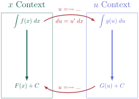
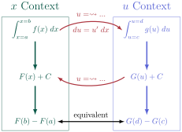

We have spent some time thinking about integrals, both indefinite and definite integrals, and what they represent. Let’s end this discussion of integration with some classifications of indefinite integrals.
This classification is completely unserious, but maybe helpful. Let’s say that we had to classify each of the following integrals as Easy, Medium, or Hard. Again, these are completely ambiguous and not at all defined, but I hope that we can see the spirit of what we’re thinking of. Here are the three integrals that we want to classify:
Which one could have the Easy? What about a Medium difficulty integral? What makes this one a bit harder, but not so hard to be classified as Hard? Can you even solve the Hard right now?
Let’s think about a legitimately difficult integral, but one that we can actually think about.
Activity5.6.1.A Hard Integral.
We’re going to be thinking about two integrals here, but before we do, we should remind ourselves about how we can "re-phrase" an integration question.
If we are asked to find \(\displaystyle \int f(x)\;dx\text{,}\) then we are really being asked to find some function \(F(x)\) whose derivative is \(f(x)\text{.}\) Of course, we’re actually being asked to find all of the possible functions that fit this requirement, but we know that the constant of integration covers all of the differences.
This means that we can (and should?) check our answers pretty consistently: just find a derivative and check that it matches the integrand!
Find a function \(F(x)\) where \(F'(x)=3x^2e^{x^3}\text{.}\)
Hint2.
If you’re looking at the structure of \(F'(x)=3x^2e^{x^3}\text{,}\) can you tell what kind of derivative rule we had to have used in order to get this derivative?
How do we use that to "undo" this differentiation?
(b)
Explain the role of \(3x^2\) in the integral. Explain why the positioning of \(x^3\) matters.
Can you find the same kind of structure here? Is there a function-derivative pairing or composition here that signifies the end result of the Chain Rule?
(d)
How can you tell, in general, that the derivative you’re looking at is one that was produced through the Chain Rule and not the Product Rule?
Subsection5.6.1Undoing the Chain Rule
Let’s try to formalize this process of "undoing the Chain Rule" that we noticed in Activity 5.6.1. It might be helpful to, first, think about the Chain Rule and how the differentiation process works. Let’s look at the differentiating \(\sin(x^7)\) using the Chain Rule.
The first thing we should do when finding \(\ddx{\sin(x^7)}\) is recognize and identify the composition. We might call \(x^7\) the "inside" function, or re-label it as \(u\text{.}\) Then we know that the Chain Rule will tell us to differentiate the "outside" function with regard to the "inside" function (or \(u\) if we re-label things) and then multiply by the derivative of the inside function (or \(\frac{du}{dx}\)).
When we work through this process backwards, we’ll need to identify the "inside" function, but also find the derivative of that "inside" function, \(\frac{du}{dx}\text{.}\) This derivative gets introduced in the Chain Rule, and so it will have to be picked out when we undo the Chain Rule.
Let’s build this process and go through the integral \(\displaystyle \int 7x^6\cos(x^7)\;dx\) from Activity 5.6.1.
Process for \(u\)-Substitution.
Identify an "inside" function and/or a "function-derivative pair." We’ll label the "inside" function, or the "function" part of the "function-derivative pair," as \(u\text{.}\)
Example: In our integral \(\displaystyle\int 7x^6\cos(x^7)\;dx\) we can see the "inside" function is \(x^7\text{,}\) and also we have \(x^7\) and \(7x^6\) as the function-derivative pair. Let \(u=x^7\text{.}\)
Define the substitution for the differential, \(du=u'\;dx\text{.}\) We can think about this as a result from knowing that \(\frac{du}{dx}=u'\text{,}\) or by thinking that a small change in \(u\) corresponds with \(u'\) multiplied by a small change in \(dx\text{.}\)
Example: In our integral \(\displaystyle\int 7x^6\cos(x^7)\;dx\text{,}\) we labeled \(u=x^7\text{.}\) This means that \(du=7x^6\;dx\text{,}\) since this is the derivative of \(x^7\text{.}\)
Substitute! Re-write the integral, replacing the parts that you’ve labeled as \(u\) and \(du\text{.}\)
Example: We can re-write our integral to make this a bit easier to see:
Antidifferentiate! We should have an integral that is "written in terms of \(u\text{,}\)" and so we can antidifferentiate the function as if \(u\) was our input variable. Notice that what we’ve done with our substitution is to undo the "multiply by the derivative of the inside function" step of the Chain Rule. Now we can antidifferentiate the "outside" function!
Substitute "back" to have our antiderivative family written in terms of our original input variable, \(x\) in this case. We’ll replace \(u\) with whatever we had defined our substitution to be in step 1.
Activity5.6.2.Picking the Pieces of a Substitution.
We’re going to look at three integrals. Instead of working through them one-at-a-time, we’ll look at all three simultaneously, where we can practice identifying, substituting, and antidifferentiating all at the same time.
For each of these integrals, identify the substitution: define \(u\) as some function of \(x\text{.}\)
Hint.
Can you find the composition in each one? If you notice the function-derivative pairing instead, then you can think about making \(u\) the "function" portion!
Answer.
For \(\displaystyle\int \frac{3x^2+1}{(x^3+x-2)^2}\;dx\text{,}\) let \(u=x^3+x-2\text{.}\)
For \(\displaystyle \int \cos(x)\sqrt{\sin(x)}\;dx\text{,}\) let \(u=\sin(x)\text{.}\)
For \(\displaystyle \int \frac{(\ln(x))^3}{x}\;dx\text{,}\) let \(u=\ln(x)\text{.}\)
(b)
For each substitution, define \(du=u'\;dx\text{.}\)
Answer.
For \(u=x^3+x-1\text{,}\)\(du=(3x^2+1)\;dx\text{.}\)
For \(u=\sin(x)\text{,}\)\(du=\cos(x)\;dx\text{.}\)
For \(u=\ln(x)\text{,}\)\(du=\frac{1}{x}\;dx\text{.}\)
(c)
For each integral, use your substitution (for both \(u\) and the differential \(du\)) to re-write the integral.
Let’s try to explain a little bit of what is happening. This style of problem solving is really useful in mathematics, and shows up in many places.

Figure5.6.1.General idea of how a variable substitution in an integral works.
Let’s explain what is happening in this picture. First, we typically are presented with integrals in some context. Our goal is to antidifferentiate. So for \(\displaystyle\int f(x)\;dx\text{,}\) we hope to antidifferentiate and end up with \(F(x)+C\text{,}\) the family of antiderivative of \(f(x)\text{.}\) These two things (the indefinite integral and the family of antiderivatives) exist in the same context (since they’re defined with the same variable). We have spent some time moving directly from \(\displaystyle f(x)\;dx\) to \(F(x)+C\text{.}\) But now we’re seeing that this isn’t always as direct of a path as we might wish: some integrals are hard.
In this case, we can try to identify what the problem is (in this case, composition) and find some transformation to apply to our integral. We choose a variable substitution, and we translate our integral to a different context (in this case, by writing it in terms of a different variable). In order for us to do this, we ned to define some substitution \(u\text{,}\) and then translate \(dx\) into \(du\) using the relationship \(du=u'\;dx\text{.}\)
Once we have this new integral, of a different function \(g(u)\) in a different context with \(u\) acting as the input, we try to antidifferentiate again. If we pick our substitution carefully and we know what kind of problem we’re trying to fix (in this case, getting around the composition), then this new integral in the \(u\) context could be "easier" to antidifferentiate. So our goal is to antidifferentiate the integral, but we can antidifferentiate it after translating it to a different context.
Once we have this antiderivative, we can translate that antiderivative family back to the original context (in this case, we write it in terms of \(x\)). We do this by utilizing the same translation or substitution that we defined earlier: we have something defined to link \(u\) and \(x\text{.}\) We can notice that, since the object we’re translating is not an integral anymore, we do not have a differential to translate.
And there we have it: \(u\)-substitution works by identifying a problem that makes our task hard, translating our object to a friendlier context based on what we know about our problem, solving the problem in this friendlier context, and then finally translating the solution back to our original context.
Let’s practice this new strategy!
Subsection5.6.2Substitution for Definite Integrals
How would we evaluate the following definite integral?
Find an antiderivative of our function, \(F(x)\text{.}\) Any antiderivative will do, and we often pick the one where the constant term is 0.
Evaluate the antiderivative at the end points of the interval and subtract: \(F(b)-F(a)\text{.}\)
So for us to evaluate this definite integral, we can split the work into two parts.
Subsubsection5.6.2.1Antidifferentiate, then Evaluate
Part 1: Antidifferentiation. We can think about the function \(f(x) = \dfrac{x+1}{x^2+2x+1}\) and find the family of antiderivatives. Then, we can disregard the constant term (by selecting the antiderivative where the constant is 0 for convenience).
So we’ll use \(u\)-substitution on the integral \(\displaystyle \int \left(\frac{x+1}{x^2+2x+1}\right)\;dx\text{.}\)
We can use \(u=x^2+2x+1\text{,}\) which gives us \(du=(2x+2)\;dx\) or \(du=2(x+1)\;dx\text{.}\)
So let’s choose \(F(x) = \frac{1}{2}\ln|x^2+2x+1|\) as the antiderivative we’ll use.
Part 2: Evaluate at the End Points. For the integral \(\displaystyle \int_{x=0}^{x=2}\left(\frac{x+1}{x^2+2x+1}\right)\;dx\text{,}\) our ending points are \(x=2\) and \(x=0\text{,}\) so let’s evaluate!
When we substituted our integral, we were substituting the indefinite integral. What if we applied our substitution to the definite integral.
The only difference is the limits of integration (other than the interpretation of area vs. family of antiderivatives, of course). So let’s substitute the limits of integration.
Consider the definite integral. Really think about it.
Here, we label the limits of integration as \(x\)-values: \(x=0\) and \(x=2\text{.}\)
Can’t we use our substitution rule to find corresponding \(u\)-values? What happens then? Let’s approach this definite integral using the same substitution: we will think of \(u=x^2+2x+1\) again. But now we can find corresponding values of \(u\) when \(x=0\) and \(x=2\text{.}\) All we need to do is evaluate the formula for \(u\) at those \(x\)-values!
So notice that we end up with the same thing here...we can substitute the limits of integration, and this matches the same value that we would get when we evaluate our antiderivatives at the endpoints of the \(x\)-interval.
We can amend our picture from Figure 5.6.1 to include definite integrals: in this case, we can evaluate the definite integral in either context, as long as we translate the limits of integration as well.

Figure5.6.2.General idea of how a variable substitution in a definite integral works.
To see a visualization of what is happening, we can look below: move the slider to see the continuous deformation of the integral as we apply the variable substitution:
Something we can say is that, since the area doesn’t change when we do a variable substitution, then area is invariant under the transformation we’re applying with that variable substitution.
Subsection5.6.3More to Translate
Example5.6.3.
Integrate the following, making sure to translate the whole integrand function to be written in terms of \(u\text{.}\)